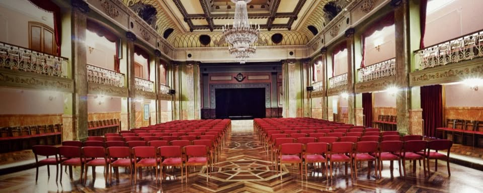

GAL
GAL
 ES
ES
 EN
EN

El Círculo das Artes es una de las instituciones culturales y sociales con mayor tradición de la ciudad de Lugo. Su edificio, ubicado en plena Praza Maior, constituye un lugar emblemático del casco histórico y ofrece un entorno elegante y representativo para la celebración del torneo.
La sala de juego proporcionará un ambiente tranquilo, luminoso y confortable para jugadores y árbitros, permitiendo el correcto desarrollo de todas las rondas del campeonato internacional.
Gracias a su privilegiada ubicación en el centro de Lugo, los participantes dispondrán a pocos minutos a pie de una amplia oferta de hoteles, restaurantes, cafeterías, comercios y de los principales atractivos turísticos de la ciudad, como la Muralla Romana Patrimonio de la Humanidad.
La organización ha elegido esta sede con el objetivo de ofrecer una experiencia de juego de la máxima calidad, combinando unas excelentes instalaciones con uno de los enclaves más representativos de Galicia.
Esperamos dar la bienvenida a jugadores y acompañantes en un espacio único que contribuirá a hacer del Open Internacional Fuxan Os Ventos 2026 una experiencia inolvidable.